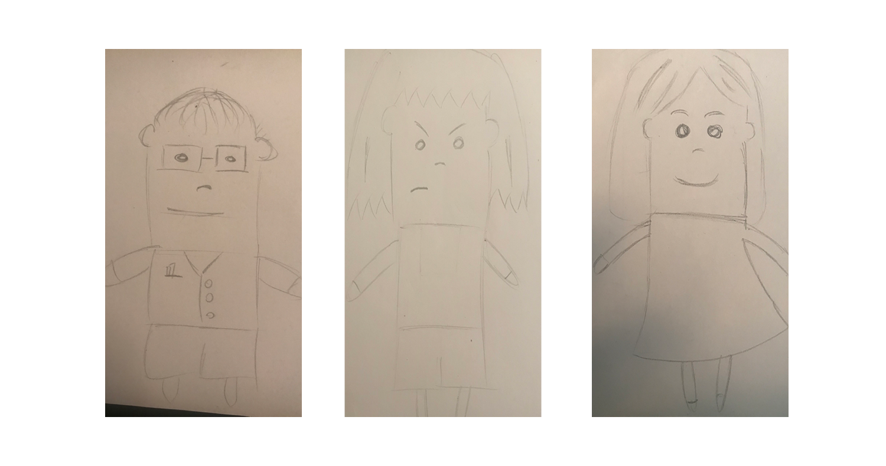
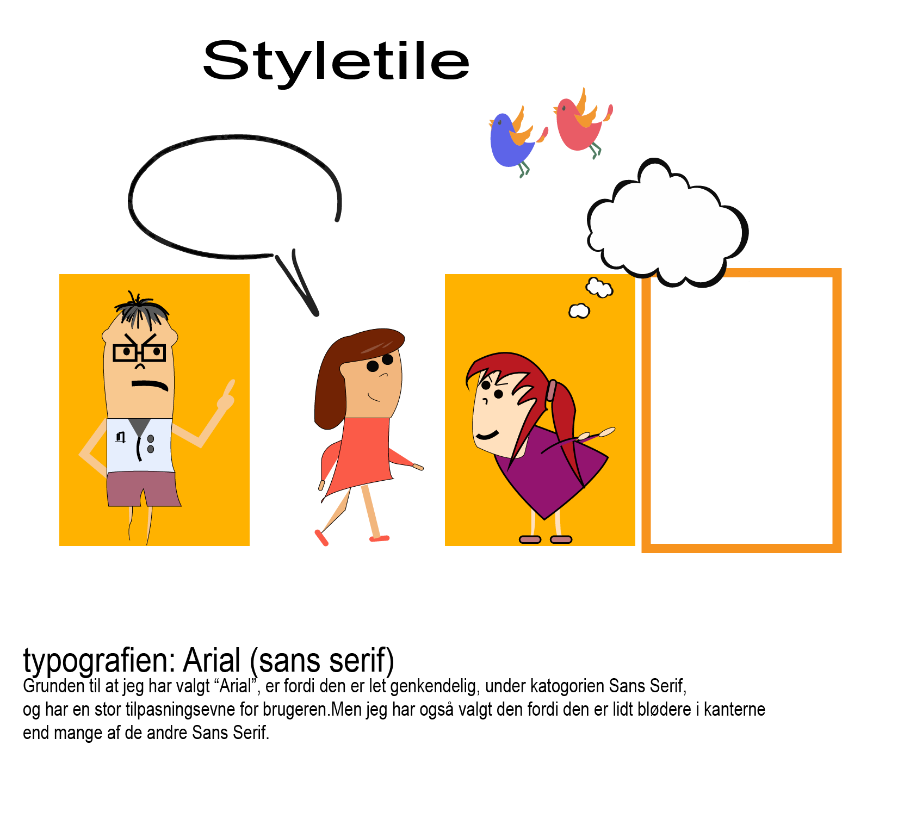

TEMA 02
Grundlæggende Animation
Watch Your Language
I vores animations forløb har vi fået stillet til opgave, at programmere og illustrere vores eget spil. Spillet skulle følge en bestemt model, men genre, stil og indholdet var op til den enkelte.
Jeg valgte at lave et spil om at bande, da det er en dårlig vane som vi er mange der kender til.

Til animationen lavede jeg tre karakter - en lære, en kvindelige hovedperson og en ond pige.

Da jeg havde sat mine mål for høje i processen, endte med kun at få animeret den kvindelige hovedperson og den onde pige.

Derudover skulle der udarbejdes et styletile, her skulle vi vise farvepalette, typografi, inspirations kunstner og hvilke grafiske former vi ville benytte under animationen.
Jeg skiftede mening omkring designet, og ændret derfor på farvepaletten og designet under processen, hvilket kan ses på dokumentationssitet længere nede.
Vores finale touch på opgaven var at implementere lyd, i form af tale og baggrundsmusik.
Til dette projekt har vi skulle udarbejde;
ANIMATIONENLYDSIDEN
STYLETILE